Intended audience: browser implementers, specification developers, and anyone who would like to get a better idea about how full line breaks and text wrapping differs for writing systems around the world.
This article gives a high level summary of various typographic strategies for wrapping text at the end of a line, for a variety of scripts.
Line-breaking is often a precursor to text justification. For a similar high-level summary of approaches to justification see Approaches to full justification.
This article provides a broad overview of the different strategies used by different writing systems, but is only an overview. Special rules apply to pretty much all scripts affecting what characters can and can't start or end a line. Some writing systems allow hyphenation, and others don't. We will only give examples of the main differences, rather than exhaustively list all the details.
For more detailed information about how line-breaking happens in various scripts, see the International text layout and typography index.
The most fundamental algorithm used to wrap text at the end of a line depends on the confluence of two factors:
A clear definition of the term 'word' is very difficult to arrive at, and yet the distinction between words and syllables is significant in certain languages for the purposes of line-breaking.
Often applications and algorithms assume that a word is a sequence of characters delimited by space, or occasionally some other punctuation character. Some languages, however, are written in scripts that only delimit syllables, but still regard words as units that are composed of one or more syllables (eg. Tibetan and Vietnamese). Others do not visually identify word or syllable boundaries at all, but maintain a distinction between words and syllables (eg. Khmer, which typically doesn't visually separate either within a phrase, but is strongly inclined to treat 'words' as a basic unit when wrapping lines, rather than syllables or characters).
Even if a word is assumed, for a particular set of languages, to be a sequence of letters bounded by spaces, linguistically-speaking this obscures some significant underlying differences and complications. The composition of those words can differ significantly from language to language. For example,
When 'word delimiters' are not present, in languages such as Khmer, Thai, Japanese, etc., the definition of what constitutes a word can be subjective when compound nouns or grammatical particles are involved. For example, the Thai translation of 'writing', การเขียน, might be regarded as a single word (kānkhīan) or as two (kān khīan).
For the purposes of this article, we will not try to define the term 'word' too closely. Instead, we will just use it to mean a vaguely-defined semantic unit that may comprise one or more syllables.
The following table provides a high level view of factors that influence how a writing system wraps text at the end of a line. The language+script combinations listed in the table are only examples, and only refer to writing systems in modern use. Where a language name is not followed by a script name, both language and script have the same name. Note that it is common for a given language to be written using more than one script.
Note also that some language-script combinations (with asterisks) appear in more than one place in the table, indicating that there are alternative approaches. The reasons for this are described later.
| Space as word separator | Other word separator | Syllable separator | No separator | |
|---|---|---|---|---|
| Wraps words | Amharic (ethiopic)*, Arabic, Armenian, Bengali, Cherokee, Dhivehi (thaana), English (latin), English (deseret), Fula (adlam), Georgian, Greek, Gujarati, Hebrew, Hindi (devanagari), Inuktitut (UCAS), Kannada, Korean (hangul)*, Malayalam, Mandaic, Mandinka(n’ko), Oriya, Panjabi (gurmukhi), Russian (cyrillic), Sinhala, Syriac, Tamil, Tedim (pau cin hau), Telugu | Samaritan | Khmer, Lao, Myanmar, Thai | |
| Wraps syllables | Eastern Cham, Korean (hangul)*, Sundanese | Vietnamese (latin), Tibetan | Balinese, Batak, Chinese, Javanese, Western Cham | |
| Wraps characters | Amharic (ethiopic)* | Japanese, Vai |
Archaic scripts are much more likely to use a scriptio continua approach (ie. no word or syllable breaks), although in modern texts describing them you may find spaces separating units of text. Older versions of the scripts mentioned may also use different rules for word division and line breaking.
In following sections we will give examples of the main alternatives, and mention some of the implications. We'll focus on modern usage only, and we'll defer mention of hyphenation until later.
This is an approach that most people are familiar with, and it’s the way the English text in this article works. When the end of the line is reached, the application typically looks for the previous space, which is taken to be a word delimiter, and wraps everything after that to the next line*.
Of course, things can be more complicated than just finding the previous space when justification is applied to text. For example, it may be possible to reduce the inter-word spacing on a line, in order to allow a word to fit when it would naturally overflow slightly; or conversely, it may be better to choose an earlier break than the immediately-preceding space, moving a word down even though it could fit, in order to improve a following line. Read more about justification.
Many scripts work this way. Among others, they include scripts used for all major European languages, including Cyrillic and Greek; scripts used for major Indian languages, such as Devanagari, Gujarati, and Tamil; scripts used for modern Semitic languages, such as Arabic, Hebrew, and Syriac; and scripts used for American languages, such as Cherokee and Unified Canadian Syllabic (UCAS).
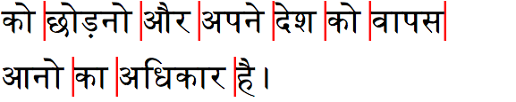
Languages written in right-to-left scripts, such as Arabic or Hebrew or Dhivehi, also typically wrap full words to the next line. However they do so, of course, in the opposite direction from, say, English.
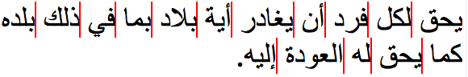
Text in languages such as Arabic, Hebrew or Dhivehi, however, gets significantly more complicated when it contains bidirectional text. If we make the text read '...في this is English ذلك... ' in the above example we end up with the following.
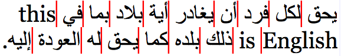
Looking at the above example, you will notice that the relative order of the English words has been rearranged across the line break. This is because horizontal bidirectional text is never read upwards, from line to line. This output is managed by the bidirectional reordering process, before line-break opportunities are calculated, and only affects the positioning of font glyphs. Characters in memory run in order of pronunciation, and don't change.
Vertically-set Chinese, Japanese, Korean, and Traditional Mongolian wrap words upwards, but the new line appears to the left for CJK, and right for Mongolian.
Thai, Lao, and Khmer are languages that are written with no spaces between words. Spaces do occur, but they serve as phrase delimiters, rather than word delimiters. However, when Thai, Lao, or Khmer text reaches the end of a line, the expectation is that text is wrapped a word at a time. For humans, this is is not too hard (if you speak the language), but applications have to find a way to understand the text in order to determine where the word boundaries are.
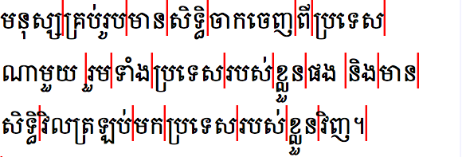
Most applications do this by using dictionary lookup. It’s not 100% perfect, and authors may need to adjust things from time to time. For example, here are two alternative sets of line-breaking opportunities for a Thai phrase.
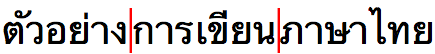
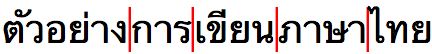
The difference here is not just a question of faulty implementations. As mentioned earlier, the concept of what is a word in writing systems that don't clearly delimit them is somewhat fluid. The above differences arise from different subjective opinions about whether compound words should be wrapped whole or not to the next line.
In the past, the Unicode character U+200B ZERO WIDTH SPACE (ZWSP) was used to indicate word boundaries for these scripts, and some standard keyboards such as Khmer NIDA still generate ZWSP with the spacebar key, but recently major languages have line-breaking implementations at their disposal, which means ZWSP is not essential. Large-scale manual entry of ZWSP is also not very practical because the user cannot see the separator in most scenarios; this leads to problems with ZWSP being inserted in the wrong position, or multiple times. ZWSP may, however, be used to hand-craft and fix aspects of line-break behaviour.
It is also important to bear in mind that the scripts referred to here may be used to write languages other than those mentioned, in particular minority languages for which different dictionaries are needed. Since such dictionaries may not available in a given browser or other application, there is a tendency to use ZWSP in order to compensate.
Some writing systems wrap not just words but syllables to the next line. Often it is preferable to wrap whole words, but text can also be broken at syllable boundaries instead.
Some analysis of the text is typically needed to determine where the syllable boundaries occur. Often the end of a syllable is marked by a final consonant that is a combining character, or the end of the syllable may be indicated by a special mark, however in some cases the location of syllable boundaries may be visually ambiguous. Furthermore, the syllable in question may be an orthographic syllable, rather than a phonetic syllable (see below).
Chinese and Korean are included here, although they are slightly unusual in that a syllable normally corresponds to a single character, rather than a sequence. (Although in the rare case where Korean is stored as jamos, rather than syllabic characters, there is a sequence involved.)
A good example of of a writing system that breaks regularly at syllable boundaries is Tibetan, which uses ་ [U+0F0B TIBETAN MARK INTERSYLLABIC TSHEG] (pronounced tsek) to signal the end of a syllable.
Tibetan wraps by moving complete syllables to the next line, so that the original line ends with a tsek mark. Tibetan words can be made up of multiple syllables and although it is preferable to avoid breaking a line in the middle of the word, it is not essential. A syllable, on the other hand should always be kept intact.
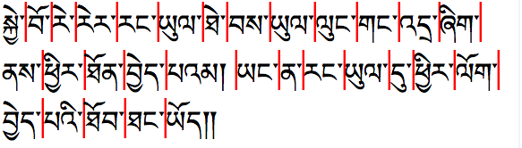
Korean is unusual in that words in modern hangul text are normally separated by spaces, but the writing system allows content authors to choose one of two ways for that text to be wrapped.
Syllable-based wrapping is common, especially in fully justified text (which is more common in CJK writing systems than in Western ones), but paragraphs with a ragged right edge will often wrap whole words. However, the choice is motivated by author preference, rather than any hard and fast rule.
You may also come across Hangul written with no space between words (ie. like Chinese and Japanese), especially in older texts.
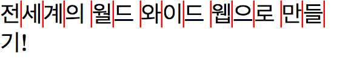
We could have described hangul as character-based wrapping, rather than syllable-based. Syllable-based is particularly appropriate when Korean text is stored as jamos, however the vast majority of Korean text is stored as syllabic characters.
We saw that Korean text uses spaces between words, but doesn't necessarily use those spaces to identify line-break opportunities. There are some other writing systems that also separate words by spaces, but may actually wrap on syllabic units. Unlike Korean, which normally wraps character by character, these writing systems use a sequence of characters corresponding to a syllable as the unit of text.
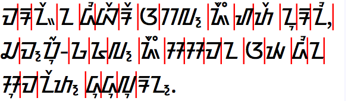
A number of other South East Asian scripts are written without spaces between words. In these writing systems you may also find text being wrapped at syllable boundaries, in addition to word boundaries.
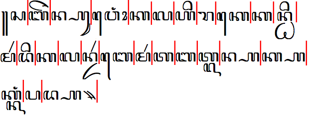
The break opportunities shown above for Javanese correspond to orthographic syllables, rather than phonetic ones. For example where one phonetic syllable ends with a consonant and the following syllable starts with a consonant they may be stacked or conjoined in a special way. Those combinations are not split. In many scripts these special conjuncts are likely to only occur internally within words, but in others (such as Javanese and Balinese) they may actually span word boundaries.
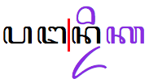
Where a writing system can represent syllable-final consonants using a combining character, those are generally regarded as part of the preceding orthographic syllable.
These languages tend to wrap characters to the next line, regardless of syllable or word boundaries. However, that is a slight oversimplification, as we will see here and in the following sections, because there are typically rules about where punctuation can appear that affect line-break opportunities, and some adjacent characters may be kept together.
Japanese and Vai typically wrap individual characters to the next line, regardless of word or syllable boundaries.
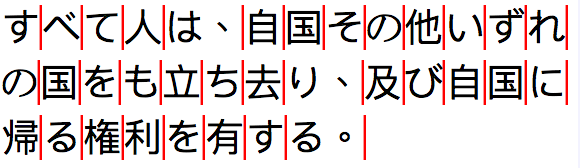
This type of wrapping is sometimes referred to as syllabic, but actually Japanese is a mora-based script, rather than a syllable-based one. For example, it is possible to find text wrapped within the single syllable きょう (pronounced kyō, meaning 'today').
That said, things are (as always) not quite so straightforward. While it is common to wrap the last of the three characters in the word きょう independently to the next line, some content authors prefer to always keep the small second character with the first. CSS provides strict and loose values for the line-break property to allow content authors to control this behaviour. The latter value allows line-breaks between the two. This can often be useful for text in narrow columns, such as newspapers.
Furthermore, there are occasionally situations, such as in headings, where the content author may prefer to wrap without splitting what are perceived to be 'words'. Note, however, that in Japanese compound words are often built from individual words, and Japanese adds grammatical particles after words, which may or may not be seen as tightly bound to the word. Therefore, as for Thai, it can be fairly subjective as to what constitutes a word boundary in Japanese.
In some cases, the character-based wrapping used for Chinese and Japanese is also applied to embedded Latin text. When such embedded text is wrapped, no account is taken of syllable or hyphenation boundaries. Likewise, Japanese and Chinese text embedded in Latin text may be expected to wrap as a single unit. (This behaviour can be controlled using CSS properties.)
Modern Ethiopic text may use spaces between words, in which case the expectation is that a whole word wraps to the next line as a unit.
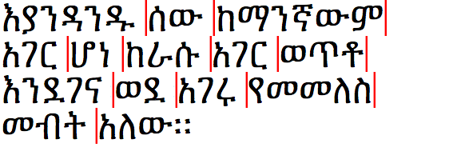
However, Ethiopic text may also use the traditional wordspace character ፡ [U+1361 ETHIOPIC WORDSPACE] to indicate word boundaries. When that is the case, Ethiopic wraps after any character, as long as the wordspace doesn't appear at the start of the line.
Non-space word separators are also particularly common in archaic scripts.
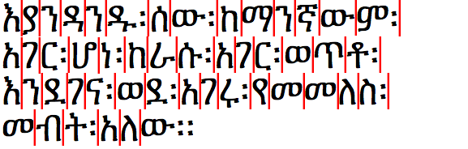
Of course, as with other character-based line-breaks, there are other rules to consider. For example, it is preferable to precede the wordspace by at least two characters at the line start, and punctuation at line start and end can affect the default line-break behaviour (see below).
Hyphenation is a mechanism that helps to achieve a better fit for text on a line. Only a subset of writing systems support hyphenation, but it is mostly needed to break words into smaller units for wrapping.
It is important to note that hyphenation rules differ from language to language within the same script. Although both use the Latin script, German and English orthographic rules can be quite different. Arabic language content doesn't usually permit hyphenation, but Uighur does, even though they both use the Arabic script. (Note, that Arabic provides a range of alternative methods to lengthen or shorten lines during justification.)
The mechanism involved in hyphenation also varies. For some languages, the hyphen (which may not look like '-') appears at the start of the following line, in others it may appear on both lines. In some cases the spelling of a word is changed around hyphenation, for example in Dutch cafeetje → café-tje and skiërs → ski-ers, and in Hungarian Összeg → Ösz-szeg.
In other scripts, text may be broken inside a word on occasion, but no 'hyphen' is used to signal the break.
The Japanese example above shows clearly how line breaks are often prohibited before certain punctuation marks. It is common to most scripts that content should not start a line with a punctuation mark that shows the end of a phrase or section.
Other punctuation marks are normally not expected to end a line. These include opening parentheses or brackets.
In these circumstances, an application will normally look for the preceding line-break opportunity, and wrap the punctuation and its preceding text to the next line together.
It may not be necessary to wrap the punctuation character to the next line if it's possible to contract the space around other characters on the line during justification – thereby leaving room for it to fit.
If that isn't possible, an alternative strategy sometimes seen in languages such as Japanese and Chinese involves leaving the punctuation hanging outside the margin at the end of the line. (Obviously, this only works if there is a visible margin available.)
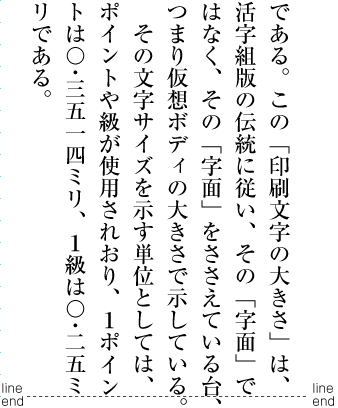
In some situations, a mechanism is needed to prevent line-breaks occuring. This can be particularly useful when a sequence of characters on a very short line has no natural line-break opportunity, but it may also be useful in other situations where you want to customise behaviour.
Unicode has a set of rules for defining default grapheme clusters, which indicate sequences of characters that should not normally be split by a line break. For example, this includes any combining character following a base character. It can also be extended, however, to prevent breaks within multi-character syllables, for example in Indic or Southeast Asian scripts.
There are also characters in Unicode that glue adjacent characters together, including characters such as U+00A0 NO-BREAK SPACE and U+2011 NON-BREAKING HYPHEN, and for situations where you want to prevent line-breaks an invisible U+2060 WORD JOINER.
We have already mentioned the strict mode which is used to keep certain characters together in Japanese. Markup or styling may also be used to override normal breaking behaviour. For example, in headings it is sometimes preferred to break at word boundaries in Japanese, to avoid ending up with a small number of characters on a new line. Styling can be used to achieve this.
In addition to rules about what character can or cannot appear at the end/start of a line, there may be more complicated rules related to the process of wrapping text.
Here we provide, by way of an example, some detail about line breaking in traditional Tibetan formats. In Tibetan, U+0F0D TIBETAN MARK SHAD1 is used as a phrase delimiter, and a double shay is a topic delimiter. If just a single syllable before the shay wraps to a new line, the shay (or the first shay when there are two) is replaced by U+0F11 TIBETAN MARK RIN CHEN SPUNGS SHAD2. At the end of a topic the rules say that only one shay should be converted, however it is moderately popular to convert both. This change serves as an optical indication that there is a left-over syllable at the beginning of the line that actually belongs to the preceding line.
1) SHAD (pronounced shay)
2) RIN CHEN SPUNGS SHAD
1) 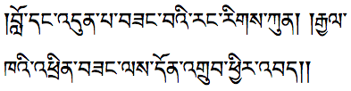
2) 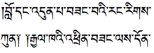
This varies in the following cases:
3) 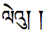 le'u
To finish, an illustration of special behaviour in the Javanese script. When a new line begins with U+A9BA JAVANESE VOWEL SIGN TALING4, an identical spacing glyph is placed at the end of the previous line. Importantly, there is only one taling character in memory: the first glyph is just a ghost.
4) 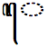 TALING
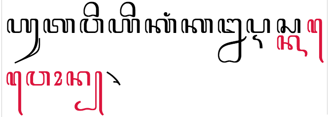
This is not common in modern text, although that is not so surprising since in order to produce it a rather special algorithm is needed. When using old type setting techniques this (and the Tibetan example above) would be relatively easy to produce by adding some type to the end of a static row of type. However, Web pages are dynamic and the width of a line can change at any time, as the user changes the browser window dimensions. The behaviour shown has to be produced only when the break happens to fall in exactly the right place: as text reflows when the browser window width changes, the extra taling needs to disappear.
Related links, International text layout and typography
Related links, Authoring HTML & CSS